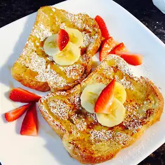

French Toast
Homepage

Description
French Toast made with flour to make fluffier
Ingredients
- 1/4 cup all-purpose flour
- 1 cup milk
- 1 pinch salt
- 3 eggs
- 1/2 teaspoon ground cinnamon
- 1 teaspoon vanilla extract
- 1 tablespoon white sugar
- 12 thick slices bread
Steps
Step 1:
- Measure flour into a large mixing bowl. Slowly whisk in the milk. Whisk in the salt, eggs, cinnamon, vanilla extract and sugar until smooth.
Step 2:
- Heat a lightly oiled griddle or frying pan over medium heat.
Step 3:
- Soak bread slices in mixture until saturated. Cook bread on each side until golden brown. Serve hot.